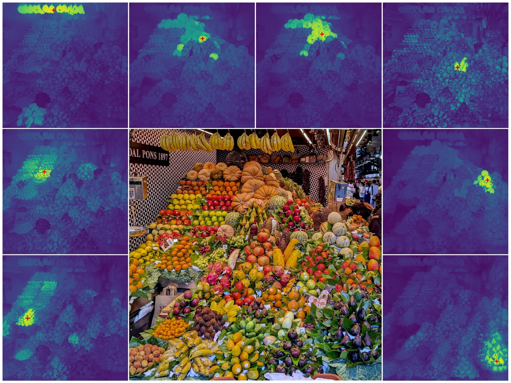

Instantaneous vision
making sense of what it sees at a given moment


 NeurIPS 2026
NeurIPS 2026


Yarbus 1967, Eye Movements and Vision



passive, best published passive, frozen features + a linear layer active: sequential glimpses
Seeing
making sense of what it sees at a given moment
updating a persistent, evolving understanding of the scene
Observer
Choosing where to look
deciding where and at what zoom level to look next
Policy
prior work focused here
No policy can make up for a poor observer. A general-purpose observer lets you use any policy.


Passive, each glimpse
CanViT, far end
CanViT, near end
CanViT, both
Classes


p(table)


What is kept from one view to the next?
How does what was seen change how the next view is processed?
How do human scanpaths compare with policies on the same observer?
Scene
Zoomed out
p(object)
Zoomed in
p(object)
Clock


Television


 Paper
Paper
 Code
Code
 Models
Models